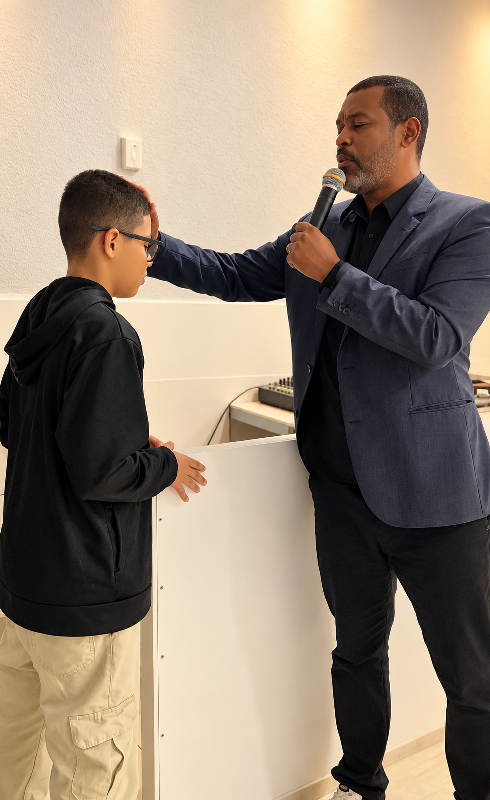
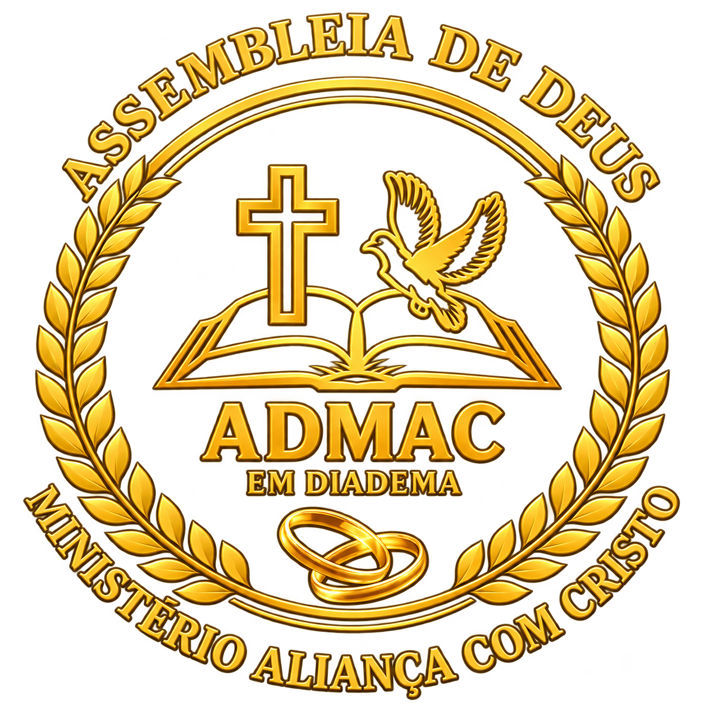
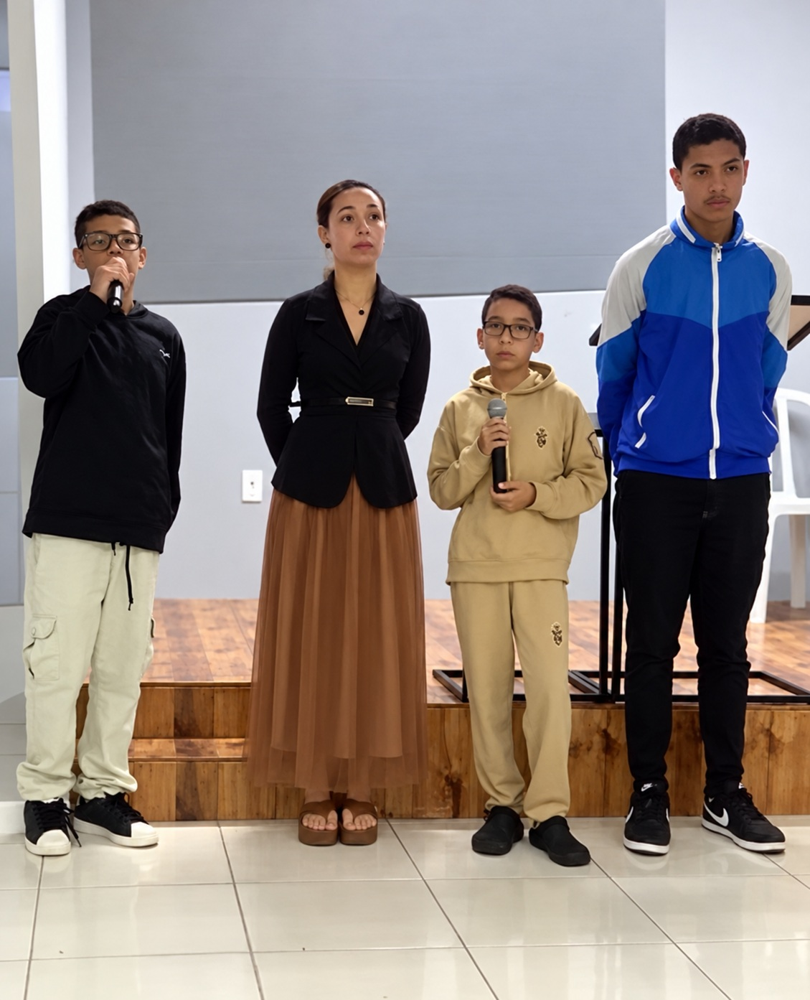
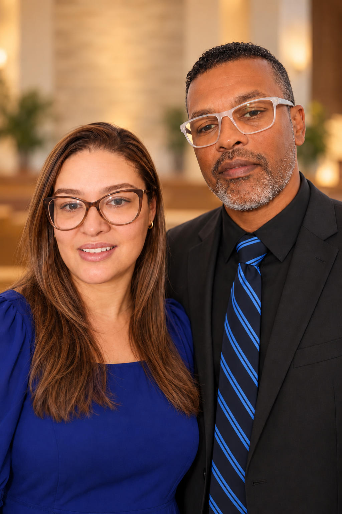

Terça-feiraCulto de oração19h30


ADMACMinistério Aliança com CristoVenha nos visitar ↗Venha adorar a Deus, conhecer a sua Palavra e compartilhar a caminhada com uma comunidade que acolhe você.



Foto de terça-feira: momento de oração na ADMAC. As imagens de quinta-feira e domingo são ilustrativas.

A Assembleia de Deus Ministério Aliança com Cristo iniciou sua caminhada em 10 de julho de 2026, fundada pelos pastores Júlio e Priscila. Uma história que começa com fé, amor e dedicação ao cuidado de vidas e ao ensino da Palavra de Deus.
Nossa casa é sua casa. Será uma alegria receber você e sua família para viver momentos de comunhão e experimentar o amor de Deus conosco.
Sua presença será uma alegria →“Pois o Filho do homem veio buscar e salvar o que estava perdido.”LUCAS 19:10 · NVI
Conheça um pouco da nossa caminhada de fé. Assista a um momento compartilhado pela igreja.

Com amor, fé e dedicação, nossos pastores têm a missão de cuidar de vidas, compartilhar a Palavra de Deus e acolher cada pessoa com carinho. Seus corações estão dedicados a servir ao Senhor e caminhar ao lado de cada família, levando esperança, amor e a presença de Deus.
Será uma alegria receber você! Venha conhecer nossa igreja, viver momentos de comunhão e experimentar o amor de Deus conosco. Nossa casa é sua casa!
Converse com a igreja ↗A galeria receberá fotos reais dos cultos, eventos e momentos especiais da igreja.
Rua Serra do Tumucumaque, 480
Campanário / Parque Reid · Diadema – SP
CEP 09930-710